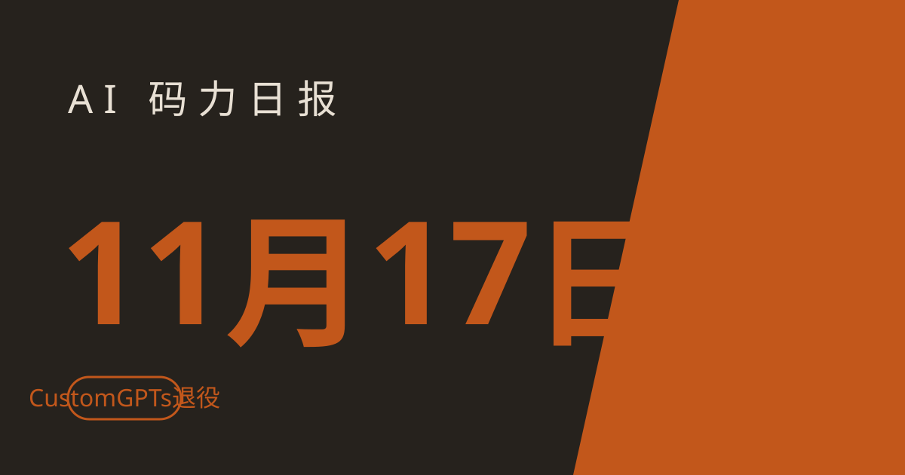

AI 码力日报 · 2026年11月17日

⚡ 一句话速览
- Custom GPTs 12 月 11 日退役：自己搭的 GPT 全部停用，迁移到 Projects 或插件，别等到最后一天。
- OpenAI 免费 ChatGPT 给 20 万科学家：11 月 23 日开放申请，先到先得；配套研究称科学家用 AI 后效率接近翻倍。
- Gemini 4 Carbon 下放 Pro 用户：最强的 Gemini 模型不再是 Ultra 专属，AI Mode 里也能用上；介绍价 11 月 30 日到期。
- 英伟达今晚财报：股价六连跌、一周蒸发 5730 亿美元之后，临时 CEO Kress 带队首秀。
🤖 今日 AI Coding 动态
OpenAI：Custom GPTs 12 月 11 日退役，没迁移的抓紧动手
跟你有啥关系：如果你在 ChatGPT 里搭过专属 GPT——写代码的、改简历的、跑数据的——12 月 11 日之后全部打不开，趁现在迁走。
OpenAI 已确认 Custom GPTs 将于 2026 年 12 月 11 日退役（FedRAMP 与获批延期的企业工作区延至 2027 年 2 月 11 日）。新 GPT 的创建入口已经关闭（Free、Go、Plus、Pro 用户均已停建，企业工作区 10 月 26 日先停）。迁移路径有两条：GPT 的指令变成 Project 里的项目指令（所有套餐都含，不另收费），知识文件变成引用文件；想做成可分享的东西就迁成插件（Plugin），把技能、联网应用与交互界面打包在一起。好消息是旧对话记录不受影响，退役后历史聊天照样能看。我的建议：先把 GPT 的指令与知识文件导出来，别等到 12 月 10 日晚上才想起来。原文链接
OpenAI：ChatGPT 要变"超级应用"？FT 曝改版主推 Codex 与 agent
跟你有啥关系：ChatGPT 正在从聊天框变成一个什么都能干的入口——写代码、买东西、调第三方应用，以后可能都在里面完成。
据《金融时报》11 月 16 日报道，OpenAI 正准备对 ChatGPT 做一次大改版，方向是把它变成一个以 AI agent 为中心的"超级应用"：Codex 编程工具、图片生成与精选合作应用会被推到更显眼的位置，同时引导用户使用能产生收入的产品。企业客户已贡献约 40% 的收入，改版也会继续向企业侧倾斜。改版预计未来几周内在网页与移动端陆续上线。目前这只是报道，未有 OpenAI 官方确认，但结合最近 dots agent 与 ChatGPT Wallet 的接连上线，方向基本对得上。原文链接
OpenAI：免费 ChatGPT 给 20 万科学家，实测效率接近翻倍
跟你有啥关系：搞科研的读者注意了——11 月 23 日开放申请，白拿 ChatGPT Plus；不搞科研的也可以看看这份研究，里面有 AI 到底在哪类工作上最管用的实测数据。
OpenAI 11 月 16 日宣布把"ChatGPT for Academic Researchers"计划从 10 万人翻倍到 20 万人：11 月 23 日开放 5 万个新名额，先到先得，每人可带两名合作者，覆盖学术机构的科研、数学与工程人员；新名额给的是 ChatGPT Plus（试点给的是 Pro，OpenAI 称多数人用 Plus 就够了）。配套发布的《Science at the Frontier》研究跟踪了 1819 名试点研究者、58 万条真实消息（8 月 20 日至 9 月 22 日）：受访科学家估计，同等质量的工作不用 AI 要多花约 1.9 倍时间，其中写研究代码最高，达 2.85 倍；但全流程"端到端自主科研"只占消息量的 0.4%，大家还是把 AI 当助手用，而不是把实验室钥匙交出去。提醒一句：样本是主动申请的研究者，结论别外推到所有人。原文链接
Anthropic：Fable 5.2 上线一周复盘——更快、更便宜，免费周今晚截止
跟你有啥关系：这是现在 Claude 阵营最强的长程 agent 模型，降价后 API 更便宜；Pro/Team 用户的免费体验今晚就结束，还没试的抓紧。
Claude Fable 5.2（11 月 9 日发布）是 Anthropic 的新旗舰，与受限的 Mythos 5.2 同属一个模型。官方跑分：FrontierCode 2.0 得 49.1%，高于 Opus 5.5 的 45.5% 与 Fable 5.1 的 32.4%；API 定价 $8/$40 每百万 tokens，比 Fable 5.1 的 $10/$50 降了两成，输出速度快约 30%；上下文 1M tokens，最大输出 128K。注意：Fable 5.2 默认开启自适应思考，旧的 computer 工具在 Bedrock 之外被拒，迁移前先看官方的破坏性变更清单。Pro 与标准 Team 用户本周可免费使用全部 Fable 模型（额度上限为每周限额的 50%），截止到太平洋时间 11 月 16 日 23:59，也就是北京时间今天下午约 16:00，另有一次额度重置别忘了领。原文链接
Google：Gemini 4 Carbon 下放 Pro 用户，介绍价 11 月 30 日到期
跟你有啥关系：Google 最强的 Gemini 模型不再是 Ultra 专属，Pro 用户在 AI Mode 里也能用上了；但介绍价月底就涨，想试便宜的现在就上。
Google 的 Gemini 4 Carbon（10 月 28 日发布、11 月 10 日全面开放）现已下放到 Pro 订阅用户，在 AI Mode 中可用，此前仅限 Ultra 用户。定价上：Carbon 介绍价为 $2/$10 每百万 tokens（输入/输出），11 月 30 日之后涨到 $4/$20；同门快模型 Hydrogen 为 $1.50/$7.50，自 11 月 12 日起已驱动 Google Search。订阅侧：Hydrogen 已出现在 Plus、Pro 与 Ultra 的权益里，Carbon 则在 Ultra 之外又多了一个 Pro 入口。我的看法：Carbon 定位是重活模型，日常写代码用 Hydrogen 更划算，Carbon 留给长上下文与复杂推理任务。原文链接
Google：AdMob 连发三件 AI 工具，MCP 服务器都安排上了
跟你有啥关系：做 App 变现的开发者注意——Google 把 Gemini 塞进了 AdMob，还给 coding agent 留了官方技能包与 MCP 服务器，以后调广告配置可以直接让 agent 来。
Google 11 月 16 日在官方博客发布 AdMob 的三件 AI 工具：一是 Ask AdMob，一个住在 AdMob 账号里的 Gemini 对话助手，能发现配置错误、SDK 问题与收入缺口，未来几个月内测；二是 AdMob agent skills，现在就能装，让 Claude Code、Cursor 这类 coding agent 直接读懂 AdMob 的配置与文档；三是 AdMob MCP 服务器，让 agent 通过标准协议调用 AdMob 功能。三件套分三批到，技能包先行，助手随后，服务器压轴。独立开发者做应用变现，配置广告这件事终于不用再翻文档了。原文链接
英伟达今晚财报：Kress 首秀，股价已六连跌
跟你有啥关系：GPU 供给、价格与 AI 投入的风向标，今晚见分晓——黄仁勋辞职后第一份财报，市场要看新班子怎么讲故事。
英伟达将于美股盘后公布 10 月季度财报，这是临时 CEO Colette Kress（原 CFO）带队的首场。背景不太好看：股价上周跌 12.7%，连续第六周下跌，创 2012 年 10 月以来最长连跌纪录；单周市值蒸发 5730 亿美元，创历史最大单周跌幅。压力不只来自人事风波，市场也在质疑 AI 投入的可持续性与数据中心建设放缓。今晚重点看三点：数据中心收入增速、下一季度指引，以及 Kress 对继任者与战略的表态。数据截至撰写时，财报后股价怎么走，明天见分晓。原文链接
Meta：Astryx 设计系统 2.4 万 star，专为 coding agent 而生
跟你有啥关系：让 AI 写 UI 最头疼的是它瞎猜样式——Meta 把自家设计系统重做了一遍，目标就是让 agent 不用猜，直接照着规范写。
Meta 9 月开源的 Astryx 设计系统正在 GitHub 趋势榜上狂飙：约 2.5 万 star（截至撰写时），11 月 11 日单日新增约 2800 star。它基于 React 与 Meta 自研的编译时 CSS 引擎 StyleX，特点是"agent 可读"——组件、token 与用法都按机器能直接理解的方式组织，coding agent 生成界面时不用再凭感觉拼样式。对于用 AI 批量出界面的团队，这类"给 agent 准备的设计系统"会越来越多；Astryx 是第一个吃到红利的。原文链接
LangChain 拿下 3 亿美元 C 轮，估值 30 亿美元
跟你有啥关系：做 agent 落地的开发者基本绕不开 LangChain/LangSmith——这轮融资说明资本在押注"agent 操作系统"这层，LangSmith 的新功能 11 月 20 日见。
LangChain 11 月 13 日宣布完成 3 亿美元 C 轮融资，估值 30 亿美元，由 Alphabet 成长基金 CapitalG 领投，新加坡主权基金 GIC 与 DFJ Growth 参投；估值约一年前 12.5 亿美元的 2.4 倍，累计融资达 4.6 亿美元。钱全部砸向 LangSmith，要把它从 agent 的观测与评估工具升级成"agent 操作系统"：agent 运行时、agent 改进（观测、评估、微调）与 agent 治理（模型与工具网关）三条线。LangChain 称已有 7000 多家机构在用 LangSmith，每天处理超 10 亿事件（公司自报数据，未经独立审计）。11 月 20 日有一场发布会，公布新一批 LangSmith 功能。原文链接
🔧 工具更新日志
Claude Code v2.1.321 / v2.1.323：4 处权限修复 + Code Mode 实验功能
本周 Claude Code 连发 4 版（v2.1.321–v2.1.325）。最值得升级的是 v2.1.321 的 4 处权限与沙箱修复：都是"本该弹提示却没弹"的口子，不升级你的操作习惯会被悄悄改掉。v2.1.323 加了实验性 Code Mode（可选项）：Claude 直接写 JavaScript 来调用自己的工具，适合想给 agent 加自定义逻辑的人。v2.1.325 还修了一个 zstd 解码的安全问题。顺带一提，Fable 5.2 已成为默认 Fable 模型。升级方式：claude update，或直接重装。更新日志
💬 社区热议
HN 289 分：软件正在系统性崩坏，AI 既是病因也是症状
11 月 16 日 HN 首页帖，289 分、172 条评论。作者 Jimmy Breck-McKye 盘点了 2026 年的连环事故：微软全球断网两天、FAA 停飞全美航班、PHP2Shell 远程代码执行漏洞、eMudhra 弱密钥导致大批 SSL 证书沦陷。他的论点是：这不是一两个 bug，而是整个软件生产方式出了问题——依赖链没人真正懂、复杂度涨得比理解力快，AI 写代码与 AI 找漏洞又同时踩下了油门。评论区吵的是解法：有人主张回归小团队与可读架构，有人认为复杂度守恒、工具升级只会让人挑战更大的系统。我的看法：AI 生成代码正在放大这个问题——审 agent 写的代码时，先看依赖与边界，再看逻辑。原帖
IG 实测：Claude Code 还能这么用——5 个 Sonnet 并行调研，Opus 5.5 汇总
11 月 15 日 Instagram 视频，博主 Nandini Agrawal 演示了一个跨模型分工 workflow：派 5 个 Sonnet agent 并行调研 AI 趋势的五个维度（实验室发布、职场动态、社区热议、财经、政策），再由 Opus 5.5 汇总成一份分析，几分钟完成。结论挺有意思：AI 圈的话题已经从"能干什么"转向"谁来买单"，头号趋势是"AI 的钱从哪来"。核心技巧是给每个子 agent 明确的调研维度与输出格式，汇总模型只负责综合与标注分歧，不重复调研。今天的教程就是把这个 workflow 复现一遍。原帖
Threads 770 赞：现在就该学 Claude Code，半年后见分晓
11 月 14 日 Threads 热帖，770 赞。数据分析师 Stanley Wang 建议：现在花时间学 Claude Code、搞懂 terminal 里的 agent 是怎么回事，半年内会看到回报。评论区不少人附和：terminal 一开始吓人，上手后发现没那么难；也有人提醒，真正重要的是判断力与工作流——写测试、看 git diff、划清权限范围，比具体用哪个模型重要得多。我的看法：工具会换，但"把需求说清楚、把结果验清楚"这两件事不会变。原帖
IG：7 个你可能不知道的 Claude Code 功能，个个省时间
11 月 16 日 Instagram 图文帖，博主 Natasha AI 整理了 7 条 Claude Code 斜杠命令：/compact（压缩对话省上下文）、/rewind（回到 earlier 检查点）、/context（看上下文用量）、/plan（改代码前先出实施计划）、/memory（管理 CLAUDE.md 里的持久指令）、/btw（问旁支问题不污染主上下文）、/verify（构建并运行应用确认改动真生效）。每条都配了"什么时候用"的说明。最值得养成习惯的是 /plan 与 /verify：一个防返工，一个防"看着改完了其实没跑起来"。原帖
WIRED 官方转发：英伟达的麻烦在黄仁勋风波之前就有了
11 月 16 日 WIRED 官方 Threads 转发。文章的观点是：英伟达的麻烦不是从 CEO 辞职那天开始的——竞争对手正在追赶，AI 投入的可持续性受到质疑，芯片出口管制也早已收紧；黄仁勋风波只是让已有的裂缝公开化。评论区一半在讨论继任者人选，一半在争"AI 泡沫到底有没有"。结合今晚的财报看，这篇文章的判断对不对，市场很快会给答案。原帖
📱 AI 应用新品
ChatGPT Wallet：让 ChatGPT 的 agent 帮你买东西，但看不到你的卡号
Product Hunt 今日上榜。OpenAI 的 dots agent 现在能替你完成购买：支付网络给 agent 发一次性支付 token，agent 与商家都看不到你的真实卡号；每次购买前你先确认商品、总价与卡片，再用 Face ID 或指纹批准。与 American Express、Mastercard、Visa 合作。解决什么问题：agent 代下单最大的顾虑就是卡号泄露，Wallet 把"能花钱"与"看得见卡号"拆开了。免费额度：功能本身不另收费（消费另算）。适合谁：想让 ChatGPT 帮你订票订酒店、又不想把卡交给 agent 的人。产品页
ByteVoice：跟 coding agent 语音对话，不用再打字盯屏
Product Hunt 今日上榜。作者同时跑 4–5 个 agent 时发现瓶颈不在 agent，而在自己：打字慢、来回切窗口看谁卡住了。ByteVoice 给 coding agent 加了双向语音：按住 fn 键直接说，口音与"呃"会被自动清理成干净提示词；agent 完成、卡住或要决策时语音播报，你直接语音回；支持 Claude Code、Codex、Cursor 与任何能打字的文本框。免费额度：免费起步；Product Hunt 上首月 Plus/Pro 免费，码 HUNTOFF。适合谁：同时挂多个 agent、靠语音指挥比打字快的开发者。产品页
🐑 今日羊毛
Claude Fable 5.2 免费周：今晚截止，Pro/Team 用户抓紧薅
一句话：Pro 与标准 Team 用户本周可免费使用全部 Fable 模型，额度上限为每周限额的 50%，另有一次额度重置，北京时间今天下午约 16:00 截止（太平洋时间 11 月 16 日 23:59）。
- 怎么薅：在 Claude 应用或 Claude Code 里把模型切到 Fable 5.2 直接用，不用领券；注意额度只到每周上限的一半，别在截止前几分钟才想起来。详情
- 有效期：截至 2026-11-17 约 16:00（北京时间），过期不候
- 适合谁：Claude Pro / Team 订阅用户
Devin SWE-2 Flash：免费试用到 11 月 30 日
一句话：Cognition 给 Devin 加的小号编码模型 SWE-2 Flash，官方称速度是 SWE-2 的 3 倍、价格 1/5，Devin Desktop 与 CLI 里免费体验到 11 月底。
- 怎么薅：在 Devin Desktop 或 CLI 里直接选 SWE-2 Flash 用，不用另外申请。详情
- 有效期：截至 2026-11-30，过期不候
- 适合谁：Devin 用户、想低成本跑日常开发任务的人
Kiro：首次从免费升 Pro，当月免费再送 500 credits
一句话：亚马逊的 AI 编程工具 Kiro，第一次从免费版升级到 Pro，当月剩余时间免费，还送 500 个试用 credits（12 个月内有效）。
- 怎么薅：免费版账号里点升级到 Pro 即可，首次升级才有；需要绑一张有效信用卡。免费版本身每月也有 50 credits，可用开源权重模型与 Claude Sonnet 4.5。详情
- 有效期：自 11 月 1 日起的首次升级有效，500 credits 12 个月内用完
- 适合谁：想试 Kiro Pro、还没升过级的开发者；注意学生与部分国家/地区不在适用范围
⭐ 今日 GitHub 热门项目
kajisho5/ffmpeg-skill
给 coding agent 用的本地视频剪辑工具：42 个 FFmpeg 工具 + 一份机器可读的调用契约 + MCP 服务器，接 Claude Code、Cursor 与 Codex。能剪辑、加字幕、改画幅、响度归一化、按平台导出，全程本地跑，不用云、不用 API key。解决什么问题：让 agent 剪视频以前要么调云端 API 烧钱、要么手写 FFmpeg 命令容易翻车，这个 skill 把"怎么剪"写成了 agent 能直接照做的规范。⭐ 约 6,612（截至撰写时）。适合：用 agent 做短视频、播客剪辑、批量处理视频的开发者。项目地址
NVIDIA/SkillEvaluator
英伟达开源的 agent 技能评估框架：多层评估体系，带质量门禁、语义重叠检测、合成评估数据集生成，还能实测某个技能对 agent 行为的实际影响。解决什么问题：现在人人都在给 agent 写 skill，却没人能量化"装了这个 skill 到底变好了多少"，这个框架就是来回答这个问题的。⭐ 约 2,607（截至撰写时）。适合：维护 agent 技能库、做插件评估的开发者。项目地址
google-research/paper-orchestra
Google Research 的多 agent 论文写作框架：多个 agent 分工协作，自动完成 AI 研究论文的撰写流程。解决什么问题：写论文最耗时间的是结构、引用与反复改稿，多 agent 编排把这套流水线跑起来。⭐ 约 1,411（截至撰写时，今日新增约 306）。适合：搞科研、想试多 agent 协作写长文的人。项目地址
🤗 Hugging Face 热门模型
Edge0/Edge0-145B-NVFP4
145B 参数的 agent 模型，塞进一块消费级显卡就能跑：潜空间稀疏 MoE 架构，每 token 只激活 10.12B 参数，256K 上下文，在 RTX 5090 D 24GB 上约 98 tok/s 解码。能干嘛：本地跑 agent 任务，Terminal-Bench 2.1 得 86.5 分、DeepSWE 1.1 得 64.6 分（官方自测，均高于同源的 Qwen3.8-Flash-Next）。下载量约 55.3K、点赞约 417（截至撰写时）。适合谁：有高端消费级显卡、想本地跑大 agent 模型的开发者；下载前先看一眼许可条款。模型地址
higurashi-ai/Haru-4B
音频到音频的 5B 模型，4 天前刚更新，登上 HF 趋势榜：下载量约 3.37K、点赞约 412（截至撰写时）。能干嘛：直接处理音频输入、输出音频，适合语音对话、音频转换与配音类场景的本地实验。适合谁：玩语音模型、想找个小体积音频模型上手试的人。模型地址
🛠️ 值得一试的工具：Freebuff
是什么：一个号称"100% 免费"的 coding agent，CLI、桌面端、网页端与云端 agent 全免费，接开源模型，不用订阅、不用 API key。解决什么痛点：Claude Code、Cursor、Devin 的订阅加起来不便宜，Freebuff 想用开源模型把这笔钱省掉。免费额度：免费；但 Product Hunt 评论里有人指出，截图里出现了"Freebucks 75"的点数，与主页"无限使用"的说法对不上，实际额度机制不明。
verdict： 观望——免费的 coding agent 值得一试，但"免费"的口径前后不一致，先拿小项目试水，别急着退订现有的付费工具。产品页
🎓 3 分钟小教程：让 Claude Code 跨模型分工——5 个 Sonnet 并行调研，Opus 汇总
前置条件：Claude Code 已安装并登录，账号有 Sonnet 与 Opus 模型权限。
- 在 Claude Code 里发一条指令，明确分工："派 5 个 Sonnet 子 agent 并行调研 AI 趋势，维度分别是：实验室发布、职场动态、社区热议、财经、政策；每个子 agent 只调研自己的维度，输出不超过 300 字的要点清单，附来源链接"
- 等 5 个子 agent 回完，再发第二条指令："用 Opus 5.5 汇总以上 5 份要点，输出一份趋势简报：先给 3 条核心结论，再列各维度的关键事实，最后单独标注 5 份材料之间互相矛盾或口径不一的地方"
- 拿到简报后抽查 2–3 个来源链接，确认子 agent 没有编造；有问题就让 Opus 标出存疑项而不是直接删掉
预期效果：几分钟拿到一份带来源、分歧标注的趋势简报，比自己一条条刷信息流快得多；关键是第二步让汇总模型只做综合不做调研，分工不清是这类 workflow 翻车最常见的原因。
数据截至撰写时，仅供参考。